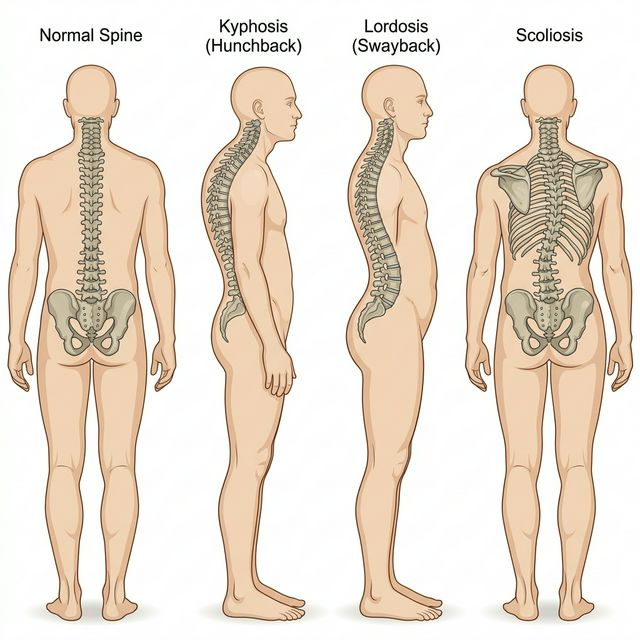
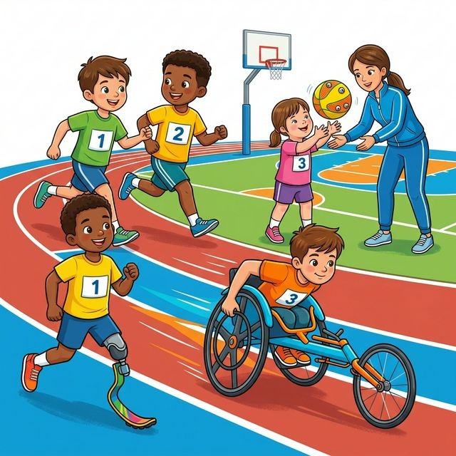
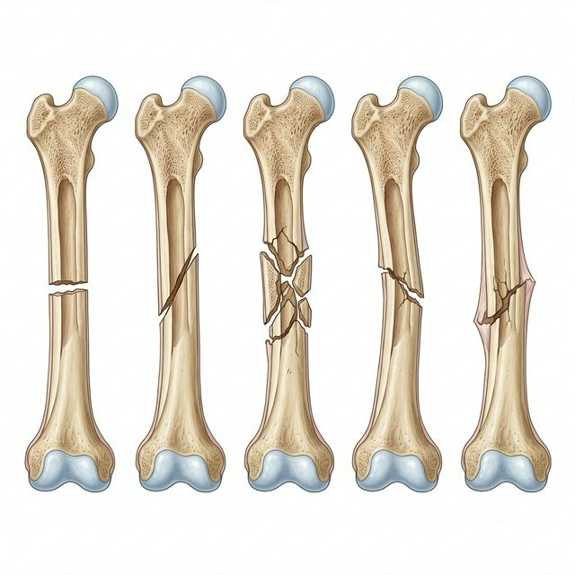

Chapter 1: Management of Sporting Events
Management of sporting events involves a comprehensive process of planning, directing, and executing sports tournaments and activities efficiently. This chapter covers the fundamental aspects of sports event management.
1. Functions of Sports Events Management
The process of management is universal and applies equally to sports. It consists of five primary functions:
- Planning: Thinking in advance about what is to be done, when, where, and by whom. It avoids last-minute haste.
- Organizing: Arranging resources (human, financial, physical) systematically to achieve the planned goals.
- Staffing: Recruiting, selecting, training, and placing the right people in the right roles for the event.
- Directing: Instructing, guiding, and motivating staff to perform their duties to the best of their abilities.
- Controlling: Monitoring the performance to ensure it aligns with the planned objectives, and taking corrective actions if necessary.
2. Various Committees & their Responsibilities
A successful tournament relies on various committees:
-
Pre-Tournament Responsibilities:
- Organizing Committee: Planning the overall event.
- Publicity Committee: Advertising the event.
- Boarding & Lodging Committee: Arranging accommodation.
-
During Tournament Responsibilities:
- Technical/Referee Committee: Officiating matches and enforcing rules.
- First Aid Committee: Handling medical emergencies.
- Discipline Committee: Maintaining decorum among teams and spectators.
-
Post-Tournament Responsibilities:
- Prize Distribution Committee: Handing out medals and certificates.
- Finance Committee: Finalizing the budget and accounts.
3. Fixtures and their Procedures
A fixture is a schedule indicating when, where, and with whom the matches will be played.
Knock-Out Tournament
Teams are eliminated upon losing a single match.
- Byes: A privilege given to a team to advance directly to the next round without playing the first round, calculated using the formula: \( \text{Next power of 2} - \text{Total Teams (N)} \).
- Seeding: Placing strong teams systematically in the fixture so they do not face each other in early rounds.
Formulae for Knockout:
- Total number of matches = \( N - 1 \)
- Number of teams in Upper Half = \( \frac{N + 1}{2} \) (if N is odd)
League Tournament
Every team plays with every other team (Single League) or twice (Double League).
- Staircase Method: Matches are shown in a step-like structure.
- Cyclic Method: One team is kept fixed while others rotate.
- Tabular Method: Matches are drawn in a grid.
Formula for League Matches:
- Single League = \( \frac{N(N - 1)}{2} \)
Combination Tournaments
Combines the features of knock-out and league (e.g., Knock-out cum League).
4. Intramural & Extramural Tournaments
- Intramural: Competitions held within the walls of a school/institution. Develops mass participation and health.
- Extramural: Competitions held outside the school involving multiple schools. Helps in finding elite talent and developing sportsmanship.
5. Community Sports Programs
Programs aimed at improving community health and unity:
- Sports Day: Annual events in schools to promote participation.
- Health Run: Running for personal well-being without competitive pressure.
- Run for Fun: Brings enjoyment and fitness together.
- Run for Specific Cause: Raising awareness or funds for a cause (e.g., Cancer awareness).
- Run for Unity: Promoting national integration and peace.
Competency-Based Questions
Q1. A sports event manager aims to organize a fast-paced basketball tournament for 11 teams. Time is limited, and they decide on a Knock-Out format.
a) Calculate the total number of matches to be played in this tournament.
b) Calculate the number of Byes to be given in the first round. Show the mathematical logic.
Answer: a) Total number of matches = \( N - 1 \) Total Matches = \( 11 - 1 = 10 \) matches.
b) Number of Byes = Next power of 2 - Total Teams
Next power of 2 after 11 is \( 2^4 = 16 \).
Number of Byes = \( 16 - 11 = 5 \) Byes.
Q2. During a League tournament of 8 teams, how many total matches will be played if a Single League format is followed? Use the appropriate formula.
Answer: Number of matches in Single League = \( \frac{N(N - 1)}{2} \)
\[ \text{Total Matches} = \frac{8(8 - 1)}{2} \]
\[ = \frac{8 \times 7}{2} = \frac{56}{2} = 28 \text{ Matches} \]
Q3. Case Study: Organizing a School Sports Fest Your school’s physical education department has entrusted you with organizing a “Run for Unity” to celebrate National Sports Day. Which specific management function will be most critical during the execution phase as runners are on the track, and why?
Answer: The most critical execution phase function is Directing. Once the event is underway, directing involves guiding volunteers, pacing the runners, managing the crowd, and ensuring that instructions (such as route directions or water station duties) are followed up in real-time. It is the active leadership and communication component that turns the event’s plan into reality.
Chapter 2: Children and Women in Sports
Physical education profoundly affects special populations such as growing children and women. This chapter covers physical fitness development stages, common postural deformities, and the unique conditions female athletes face in sports.
1. WHO Exercise Guidelines for Different Age Groups
The World Health Organization (WHO) provides age-based recommendations for physical activity:
- Infants (< 1 year): Playful, interactive physical activities multiple times a day. Tummy time (at least 30 minutes) spread throughout the day.
- Children (1–4 years): At least 180 minutes of varying types of physical activities. Restricting sedentary screen time.
- Children and Adolescents (5–17 years): Minimum of 60 minutes of moderate-to-vigorous physical activity daily. Bone and muscle strengthening activities at least 3 days a week.
2. Common Postural Deformities and Corrective Measures
Postural deformities refer to exaggerated deviations from normal body alignment.
- Kyphosis: Abnormal backward curvature of the thoracic spine (hunchback).
- Corrective Measures: Chakrasana, Bhujangasana, sitting back against a chair straight.
- Lordosis: Inward curvature of the lumbar spine.
- Corrective Measures: Halasana, Paschimottanasana.
- Scoliosis: Sideways/lateral curvature of the spine.
- Corrective Measures: Hanging on horizontal bars sideways, Trikonasana.
- Knock Knees (Genu Valgum): Knees touch while walking or standing, but heels stay apart.
- Corrective Measures: Padmasana, horseback riding, keeping a pillow between the knees while sleeping.
- Bow Legs (Genu Varum): Outward bending of legs at the knees.
- Corrective Measures: Walking on the inner edge of feet, Garudasana.
- Flat Foot: Absence of the longitudinal arch of the foot.
- Corrective Measures: Walking on toes/heels, picking up marbles with toes.
- Round Shoulders: Shoulders are bent forward.
- Corrective Measures: Hanging on Roman rings, standing in a corner and pressing the chest forward.

(Left to Right: Normal Spine, Kyphosis, Lordosis, Scoliosis. Image: AI Generated)
3. Women’s Participation in Sports
Historically, women have faced barriers to sports participation. Encouraging it yields tremendous benefits:
- Physical Benefits: Better cardiovascular health, strong bone density.
- Psychological Benefits: Self-esteem, stress release, and body positivity.
- Social Benefits: Teamwork, leadership skills, and dismantling gender stereotypes.
4. Special Considerations for Women
Female athletes face unique biological considerations:
- Menarche: The first occurrence of a menstrual cycle. Late menarche can sometimes be observed in athletes due to stress and intense physical activity.
- Menstrual Dysfunction: Irregularities, skipped periods, or complete cessation of periods due to intense physical training (Amenorrhea).
5. Female Athlete Triad
The Female Athlete Triad is a syndrome of three interrelated conditions often seen in physically active women:
- Eating Disorders: Ranging from anorexia to bulimia, often driven by body image issues in aesthetic sports.
- Amenorrhea: Absence of menstrual periods for three or more consecutive months due to low energy availability.
- Osteoporosis: Weakening of bones due to lack of estrogen (which is affected by amenorrhea) and inadequate calcium/vitamin D intake.
Competency-Based Questions
Q1. An adolescent gymnast is diagnosed with a postural deformity where her lumbar spine curves excessively inward. Based on biometric evaluations, this causes her severe back pain during routines.
a) Identify the postural deformity the gymnast is suffering from.
b) If the force exerted on the lower back is modeled as \( F = m \cdot g \cdot \sin(\theta) \), where \( \theta \) is the angle of the lumbar curve, explain conceptually how increasing the curvature angle affects the shear force on her spine.
Answer: a) The deformity is Lordosis, which is the excessive inward curvature of the lower (lumbar) back.
b) As the angle of the lumbar curve (\( \theta \)) increases, the value of \( \sin(\theta) \) also increases (for angles between 0 and 90 degrees). According to the formula \[ F = m \cdot g \cdot \sin(\theta) \], the shear force \( F \) is directly proportional to \( \sin(\theta) \). Therefore, an excessive inward curve mathematically increases the downward shear force tearing across the vertebrae, leading to severe back pain.
Q2. Case Study: Female Athlete Health Aditi is a long-distance runner. Over the past 6 months, she has restricted her food intake to drop weight, has not had her menstrual period for the last 4 months, and recently suffered a stress fracture in her tibia.
Identify the syndrome Aditi is suffering from and name its three components based on her symptoms.
Answer: Aditi is suffering from the Female Athlete Triad. The three components shown are:
- Eating Disorder (restricted food intake).
- Amenorrhea (absence of periods for 4 months).
- Osteoporosis / Decreased Bone Mineral Density (resulting in the stress fracture).
Chapter 3: Yoga as Preventive measure for Lifestyle Disease
Lifestyle diseases stem from the way people live and work. Lack of physical activity, irregular eating habits, and stress are their primary causes. Yoga (particularly Asanas and Pranayama) serves as a potent preventive measure for these ailments.
1. Obesity
Obesity is the condition where excess body fat has accumulated to the extent that it may have an adverse effect on health, diagnosed when the Body Mass Index (BMI) exceeds 30.
-
Beneficial Asanas:
- Tadasana: Standing with hands stretching upwards. It improves posture and height in children.
- Pavanmuktasana: The wind-relieving pose. Massages abdominal organs, aiding digestion and reducing visceral fat.
- Matsyasana: the fish pose.
- Halasana: the plough pose.
- Ardha-Matsyendrasana: the half spinal twist pose.
- Dhanurasana: the bow pose.
-
Contraindications (General): Pregnant women, people with severe back injuries or recent abdominal surgeries should avoid intense backward or forward bending asanas like Halasana and Dhanurasana.
2. Diabetes
Diabetes is a metabolic disease that causes high blood sugar due to inadequate insulin production or the body’s cells not responding correctly to insulin.
- Beneficial Asanas:
- Bhujangasana (Cobra Pose): Performed by lying on the stomach and raising the upper body. Stimulates the pancreas.
- Mandukasana (Frog Pose): Pressing fists against the navel area while sitting in Vajrasana. Specifically proven to stimulate insulin secretion.
- Paschimottanasana: Seated forward bend stretching the hamstrings and massaging abdominal organs.
- Kapalabhati Pranayama: Active exhalation and passive inhalation. Helps clear blockages and rejuvenate pancreatic cells.
3. Asthma
Asthma is a chronic disease of the airways that makes breathing difficult, causing inflammation and narrowing of the bronchial tubes.
- Beneficial Asanas:
- Sukhasana: The easy sitting pose for breathing effectively.
- Chakrasana (Wheel Pose): Expands the chest, lungs, and rib cage, drastically improving oxygen capacity.
- Gomukhasana (Cow Face Pose): Alleviates stiffness in the shoulders and opens up the chest.
- Anulom-Vilom: Alternate nostril breathing balances the autonomic nervous system and relieves respiratory stress.
4. Hypertension (High Blood Pressure)
Hypertension is a chronic medical condition where the blood pressure in the arteries is persistently elevated.
-
Beneficial Asanas:
- Shavasana (Corpse Pose): Utter relaxation flat on the back. It drastically calms the nervous system and lowers blood pressure.
- Vajrasana: The thunderbolt pose. Calms the mind.
- Makarasana (Crocodile Pose): Extremely relaxing for the autonomic nervous system.
- Sitkari Pranayama: Cooling breath that drops the body temperature and blood pressure.
-
Contraindications: People with hypertension must avoid inverted poses like Sirsasana or forceful breathing like Bhastrika.
5. Back Pain
Back pain is a common ailment reflecting poor posture, muscle imbalances, or prolonged sitting.
- Beneficial Asanas:
- Shalabhasana (Locust Pose): Lying on the stomach and lifting the legs. Strengthens the lower back muscles immensely.
- Vakrasana (Twisted Pose): Gentle spinal twist.
- Ardh Matsyendrasana: Half spinal twist. Alleviates severe lower back stiffness.
Competency-Based Questions
Q1. A 40-year-old software engineer complains of severe chronic back pain due to long hours in front of a computer.
a) Recommend an Asana that specifically strengthens the lower back muscles, and briefly state its procedure.
b) Assume the structural stress \( \sigma \) on a lumbar vertebra is given by: \[ \sigma = \frac{F}{A} + \frac{M \cdot c}{I} \] where \( M \) is the bending moment caused by poor posture. How does practicing the recommended Asana physically alter the variable \( M \) (bending moment) in this equation over time?
Answer: a) Shalabhasana (Locust Pose) is highly recommended. Procedure: Lie prone on the ground, keeping hands by your side or beneath your thighs. Inhale deeply and raise both legs upward together as high as possible without bending the knees. Hold the posture, then exhale and lower the legs.
b) Practicing Shalabhasana consistently strengthens the erector spinae and deep core muscles. These strengthened muscles help physically support the spine and naturally encourage an upright, erect posture rather than a slouched one. By standing and sitting straighter, the horizontal distance between the body’s center of mass and the vertebral axis decreases. This significantly reduces the bending moment \( M \), thereby safely lowering the total stress \( \sigma \) exerted on the lumbar spine.
Q2. During a physical fitness camp, Ram is practicing Kapalabhati while Shyam is practicing Sitkari Pranayama.
a) Out of the two, who is more likely to be seeking relief from Asthma and who from Hypertension?
b) Identify the physiological mechanism by which Sitkari aids the hypertensive patient.
Answer: a) Ram (practicing Kapalabhati) is likely seeking relief from Asthma or Diabetes as it actively clears airways and stimulates abdominal organs. Shyam (practicing Sitkari) is seeking relief from Hypertension.
b) Sitkari is a cooling pranayama. Creating a hissing sound by drawing air in through the teeth physically cools down the body temperature. This physiological cooling triggers the parasympathetic nervous system, drastically lowering heart rate and relaxing blood vessels, thereby reducing the sheer pressure of blood in the arteries (hypertension).
Chapter 4: Physical Education & Sports for (CWSN)
Children with Special Needs (CWSN) or Divyang deserve equal opportunities in sports and physical education. Adaptive physical education modifies traditional sports rules, equipment, and environments to cater to the differing physical and cognitive abilities of CWSN.
1. Organizations promoting Adaptive Sports
Several international and national bodies work vigorously to promote sports for individuals with disabilities:
Special Olympics
- Focus: Individuals with intellectual disabilities.
- Goal: To provide year-round sports training and athletic competition.
- Special Olympics Bharat: The Indian chapter of the Special Olympics recognized by the Ministry of Youth Affairs and Sports.
Paralympics
- Focus: Athletes with a wide range of physical disabilities (e.g., impaired muscle power, impaired passive range of movement, loss of a limb, visual impairment).
- History: Began in Rome in 1960. Always held alongside the Olympic Games.
- Governing Body: International Paralympic Committee (IPC).
Deaflympics
- Focus: Elite, deaf athletes.
- Characteristics: Athletes must have a hearing loss of at least 55 decibels in their “better ear”. Starters don’t use guns or whistles; instead, they use flags or visual cues.
2. Advantages of Physical Activities for children with special needs
The benefits of active participation are immense and go beyond mere physical fitness:
- Physical Growth: Improved muscular strength, endurance, and cardiovascular efficiency. Enhanced motor skills and coordination.
- Mental Health: Significant reduction in anxiety, stress, and depressive symptoms. Promotes a feeling of self-efficacy.
- Social Development: Provides an avenue to interact with peers, make friends, and learn teamwork.
- Behavioral Improvement: Helps channelize surplus energy positively, reducing aggressive or antisocial behaviors.
3. Strategies to make Physical Activities accessible for CWSN
Creating an inclusive environment requires careful planning and modification:
- Medical Checkup First: Always assess the specific physical boundaries and medical condition of the child before planning activities.
- Modified Equipment: Using lighter balls, brightly colored objects, or balls with bells inside for the visually impaired.
- Adapted Environment: Non-slip surfaces, wider boundaries, sensory-friendly lighting, and wheelchair-accessible courts.
- Simplified Rules: Reducing the complexity of the game rules, allowing more chances, or modifying the scoring system.
- Specialized Instruction: Using visual aids, tactile guidance, sign language, and step-by-step demonstrations.

(Inclusive physically active setup for Children with Special Needs. Image: AI Generated)
Competency-Based Questions
Q1. A physical education teacher in a high school wants to introduce sports for two newly admitted students. Student A is legally deaf and uses sign language. Student B has a severe intellectual disability but loves running.
a) Identify the international sporting events specifically designed for the conditions of Student A and Student B, respectively.
b) Calculate the probability \( P(x) \) of both students finding a specialized local coach if the probability of finding a Deaflympics coach \( P(A) = 0.3 \), and a Special Olympics coach \( P(B) = 0.5 \), assuming both events are independent. Use the formula \[ P(A \cap B) = P(A) \times P(B) \].
Answer: a) For Student A (deaf), the corresponding international event is the Deaflympics. For Student B (intellectual disability), the corresponding event is the Special Olympics.
b) \[ P(A \cap B) = P(A) \times P(B) \] \[ P(A \cap B) = 0.3 \times 0.5 = 0.15 \] There is a 15% probability of finding local specialized coaches for both adaptive sports simultaneously.
Q2. Case Study: Modifying an Environment During a basketball session designed for visually impaired students, the instructor notices that the students are frequently colliding and unable to locate the ball efficiently. Suggest three specific strategies the instructor can immediately implement to make the physical activity accessible and safer.
Answer:
- Auditory Equipment: Introduce a basketball with small bells inside so students can track its motion via sound.
- Tactile Boundaries: Place textured tape (like rough sandpaper or raised rubber strips) along the court boundaries so players can feel with their feet when they are stepping out of bounds.
- Auditory Cues at the Hoop: Place a beeper or have a volunteer continuously clap exactly behind the basketball backboard to give players a directional sense of where to shoot.
Chapter 5: Sports & Nutrition
Nutrition is the science of food and its relationship to health and sports performance. A well-balanced diet is the cornerstone of any athlete’s training regimen.
1. Balanced Diet & Nutrition: Macro & Micro Nutrients
A balanced diet contains adequate amounts of all necessary nutrients required for proper growth, maintenance, and repair of the body.
Macronutrients
Nutrients required by the body in large amounts. They provide energy and structural building blocks:
- Carbohydrates: The primary and most efficient source of energy (4 kcal/gram). Crucial for endurance athletes.
- Proteins: Essential for building, maintaining, and repairing muscle tissues (4 kcal/gram).
- Fats (Lipids): Concentrated energy reserves (9 kcal/gram). Vital for hormone production and absorbing fat-soluble vitamins (A, D, E, K).
- Water: Makes up about 60% of body weight; essential for temperature regulation and metabolic processes.
Micronutrients
Nutrients required in trace amounts. They do not provide energy directly but regulate bodily functions:
- Vitamins: Organic compounds regulating metabolism. Divided into fat-soluble (A,D,E,K) and water-soluble (B-complex, C).
- Minerals: Inorganic elements like Calcium (for bones), Iron (for hemoglobin to transport oxygen), Sodium, and Potassium (for nerve impulse transmission).
2. Nutritive & Non-Nutritive Components of Diet
Nutritive Components: Provide energy and calories (Carbohydrates, Fats, Proteins). Non-Nutritive Components: Do not provide energy/calories but are essential for health:
- Water: As mentioned, maintains fluid balance.
- Roughage (Fiber): Indigestible part of food. Soluble fiber manages blood sugar; insoluble fiber prevents constipation.
- Color compounds & Flavor compounds: Makes food aesthetically appealing and appetizing, stimulating digestive enzymes.
3. Eating for Weight Control
Achieving and maintaining a healthy weight requires balancing caloric intake with expenditure.
- Healthy Weight: A weight corresponding to an optimum BMI (18.5 to 24.9), minimizing the risk of lifestyle diseases.
- Pitfalls of Dieting:
- Skipping meals slows down metabolism.
- Extreme caloric restriction leads to muscle loss instead of fat loss.
- Dehydration (“water weight” loss) is falsely perceived as fat loss.
- Food Intolerance: The digestive system’s inability to properly break down certain foods (e.g., lactose intolerance). It is localized to the digestive tract, unlike food allergies which involve the immune system.
- Food Myths: Common misconceptions like “Eating late at night causes weight gain” or “Drinking water during meals is bad for digestion.” Factually, total caloric intake over the day matters for weight, not just the timing.
Competency-Based Questions
Q1. A weightlifter wants to build muscle mass during off-season training. However, his coach notices a drop in his energy levels during workouts.
a) Which macronutrient should be the primary component of his diet for building muscle tissue?
b) If the weightlifter consumes 150 grams of protein, how many total kilocalories (kcal) of energy is he deriving strictly from protein? Support your answer mathematically.
Answer: a) Proteins are the primary macronutrient required for building, maintaining, and repairing muscle tissues.
b) 1 gram of protein yields exactly 4 kilocalories of energy. \[ E = \text{mass in grams} \times \text{caloric content per gram} \] \[ E = 150 \times 4 \] \[ E = 600 \text{ kcal} \] The weightlifter derives 600 kcal from protein alone.
Q2. During a long-distance marathon, an athlete collapses due to extreme muscle cramps and an inability to sweat properly.
a) Identify the specific non-nutritive component and the specific micronutrient (mineral) the athlete is most likely deficient in during the race.
b) A typical resting metabolic rate implies a baseline energy requirement. If a person consumes solely water and fiber for two days, explaining using metabolic principles what pitfall of dieting this implies.
Answer: a) The non-nutritive component missing is Water (leading to dehydration and lack of sweating). The specific micronutrients (minerals) missing are Sodium and Potassium (electrolytes whose depletion causes severe muscle cramps).
b) Consuming solely water and roughage provides zero caloric energy. This extreme caloric restriction is a major Pitfall of Dieting. To meet the baseline Resting Metabolic Rate, the body is forced into a starvation mode where it begins breaking down lean muscle mass (catabolism) to extract glucose and energy, fundamentally lowering the overall metabolic rate and weakening the individual physically.
Chapter 6: Test and Measurement in Sports
Testing and measurement are paramount in sports to evaluate an athlete’s physical fitness, diagnose weaknesses, and track improvement over time.
1. SAI Khelo India Fitness Test in Schools
The Khelo India National Fitness Assessment provides standardized protocols for different age groups.
Age group 5-8 yrs / Class 1-3
- BMI (Body Mass Index): Measures body composition. \( BMI = \frac{\text{Weight (kg)}}{\text{Height (m)}^2} \)
- Flamingo Balance Test: Measures static balance. The subject stands on one leg on a small beam.
- Plate Tapping Test: Measures speed and coordination of limb movement.
Age group 9-18 yrs / Class 4-12
- BMI: For body composition.
- 50m Speed Test: Measures acceleration and top speed.
- 600m Run/Walk: Measures cardiovascular endurance.
- Sit & Reach Test: Measures flexibility of the lower back and hamstring muscles.
- Strength Tests:
- Abdominal Partial Curl Up: Measures core strength.
- Push-Ups (Boys) / Modified Push-Ups (Girls): Measures upper body strength.
2. Measurement of Cardio-Vascular Fitness
Harvard Step Test
Developed by Brouha et al. (1943) to measure cardiovascular endurance.
- Procedure: The subject steps up and down on a bench (20 inches high for men, 16 inches for women) at a rate of 30 steps/minute for 5 minutes (or until exhaustion). Then, heartbeats are counted during recovery periods.
- Pulse Count: Taken three times post-exercise:
- 1 to 1.5 minutes (\( P_1 \))
- 2 to 2.5 minutes (\( P_2 \))
- 3 to 3.5 minutes (\( P_3 \))
Computation of Fitness Index Score (Long Form): \[ \text{Fitness Index} = \frac{100 \times \text{Test Duration in Seconds}}{2 \times (P_1 + P_2 + P_3)} \]
Computation of Fitness Index Score (Short Form): \[ \text{Fitness Index} = \frac{100 \times \text{Test Duration in Seconds}}{5.5 \times (P_1)} \]
3. Rikli & Jones - Senior Citizen Fitness Test
Designed to assess the functional fitness of elderly individuals safely.
- Chair Stand Test: Measures lower body strength (standing up from a chair in 30 seconds).
- Arm Curl Test: Measures upper body strength (lifting a dumbbell).
- Chair Sit & Reach Test: Measures lower body flexibility.
- Back Scratch Test: Measures upper body flexibility.
- 8-Foot Up & Go Test: Measures agility and dynamic balance.
- 6-Minute Walk Test: Measures aerobic endurance.
4. Johnson-Metheny Test of Motor Educability
This test evaluates an individual’s innate capacity to learn new motor skills quickly.
- Originally designed by Johnson consisting of complex tumbling exercises, Metheny streamlined it into a simpler battery of tests involving staggering jumps, side rolls, backward rolls, and jumping half-turns.
Competency-Based Questions
Q1. An athlete weighing 65 kg and standing 1.75 m tall is assessing their BMI during a Khelo India fitness drive.
a) Calculate their BMI and categorize their weight class according to WHO standards.
b) If the same athlete undergoes the Harvard Step Test for exactly 300 seconds and their heart counts are \( P_1 = 90 \), \( P_2 = 80 \), and \( P_3 = 70 \), compute their Fitness Index using the Long Form formula.
Answer: a) BMI Calculation: \[ BMI = \frac{\text{Weight}}{\text{Height}^2} \] \[ BMI = \frac{65}{1.75 \times 1.75} = \frac{65}{3.0625} \approx 21.22 \text{ kg/m}^2 \] The athlete falls precisely into the Normal Weight category (BMI between 18.5 and 24.9).
b) Fitness Index (Long Form Calculation): \[ \text{Fitness Index} = \frac{100 \times \text{Test Duration in Seconds}}{2 \times (P_1 + P_2 + P_3)} \] \[ \text{Fitness Index} = \frac{100 \times 300}{2 \times (90 + 80 + 70)} \] \[ \text{Fitness Index} = \frac{30000}{2 \times 240} = \frac{30000}{480} = 62.5 \] The athlete has a Fitness Index score of 62.5, which represents average cardiovascular fitness.
Q2. During a Senior Citizen Fitness Test, a 70-year-old struggles to complete the Chair Stand Test due to localized fatigue in her legs.
a) Which specific physical component does the Chair Stand primarily measure?
b) If she later struggles to reach her toes in the Chair Sit & Reach, what component is she deficient in? What could be a physiological reason?
Answer:
a) The Chair Stand test primarily measures lower body strength.
b) Struggling in the Chair Sit & Reach test indicates a deficiency in lower body flexibility (specifically the hamstring region and lower back). A primary physiological reason for this in older individuals is the loss of elasticity in muscle connective tissues (collagen) and cartilage degeneration in the lumbar spine and pelvic joints.
Chapter 7: Physiology & Injuries in Sport
Physiology studies how the human body functions during exercise and athletic performance. Understanding physiological factors helps in maximizing fitness and swiftly dealing with sports injuries.
1. Physiological Factors Determining Physical Fitness
Physical fitness components are primarily dictated by intrinsic physiological variables:
- Strength: Determined by muscle size, muscle fiber type (fast-twitch vs. slow-twitch), and neural nerve impulses.
- Speed: Depends heavily on the percentage of fast-twitch (white) muscle fibers, mobility of the nervous system, and ATP-CP energy stores.
- Endurance: Relies on maximal oxygen uptake (\( VO_2 \text{ max} \)), lung capacity, stroke volume (cardiac output), and muscle glycogen storage.
- Flexibility: Dictated by joint structure, muscle elasticity, ligaments, and the body’s internal temperature.
2. Effect of Exercise on the Muscular System
Prolonged and systematic exercise induces significant morphological and functional changes in muscles:
- Hypertrophy: Enlargement of muscle fibers, adding strength and mass.
- Capillarization: Increase in the number of capillaries feeding muscle fibers, drastically improving fatigue resistance.
- Lactic Acid Tolerance: Athletes develop a higher threshold for lactic acid accumulation, delaying the onset of muscle fatigue.
3. Effect of Exercise on the Cardio-Respiratory System
- Bradycardia: A lower resting heart rate due to profound efficiency of the cardiac muscle.
- Increased Stroke Volume: The heart pumps more blood per beat. \[ \text{Cardiac Output (Q)} = \text{Stroke Volume (SV)} \times \text{Heart Rate (HR)} \]
- Increased Tidal Volume: The amount of air inhaled/exhaled per breath increases significantly.
- Faster Recovery Rate: The heart rate returns to normal much quicker post-exercise.
4. Sports Injuries: Classification and Management
Injuries are inevitable in competitive sports. They are broadly classified into Soft Tissue Injuries, Bone Injuries, and Joint Injuries.
Soft Tissue Injuries
Injuries affecting muscles, tendons, ligaments, skin, and fat.
- Abrasion: Superficial scraping of the skin against a rough surface.
- Contusion: Bruising caused by a direct blow, crushing underlying muscle fibers without breaking the skin.
- Laceration: An irregular, jagged tear of the skin.
- Incision: A clean, straight cut caused by a sharp edge.
- Sprain: Tearing or overstretching of ligaments (bone to bone). Often occurs at the ankle or wrist.
- Strain: Tearing or overstretching of a muscle or tendon (muscle to bone).
Bone and Joint Injuries
- Dislocation: Displacement of articulating bones from their normal joint position (e.g., shoulder dislocation).
- Fractures: Break in the continuity of a bone.
- Greenstick: Incomplete fracture where the bone bends and cracks (common in children).
- Comminuted: Bone shatters into three or more pieces.
- Transverse / Oblique: Break occurs linearly straight across or at a diagonal angle, respectively.
- Impacted: The broken ends of the bone are jammed into each other.
- Stress Fracture: Tiny hairline cracks caused by repetitive stress or overuse.

(Left to Right: Transverse, Oblique, Comminuted, Greenstick, Impacted. Image: AI Generated)
Competency-Based Questions
Q1. An Olympic sprinter is praised for her explosive energy off the starting block. A physiologist attributes this primarily to her muscle fiber composition.
a) What specific type of muscle fiber is predominantly responsible for explosive speed and power?
b) If the force generated by a single fast-twitch muscle fiber is \( F_f = 0.5 \text{N} \) and a slow-twitch fiber is \( F_s = 0.2 \text{N} \), calculate the total maximal force \( F_{\text{total}} \) output of a motor unit containing 300 fast-twitch fibers and 100 slow-twitch fibers.
Answer: a) Fast-twitch (White) muscle fibers are predominantly responsible for explosive speed and burst activities because they utilize an anaerobic energy system and contract extremely rapidly.
b) \[ F_{\text{total}} = (300 \times F_f) + (100 \times F_s) \] \[ F_{\text{total}} = (300 \times 0.5) + (100 \times 0.2) \] \[ F_{\text{total}} = 150 \text{N} + 20 \text{N} = 170 \text{N} \] The maximum force output of that specific motor unit is 170 Newtons.
Q2. During a grueling rugby match, Player A lands awkwardly and twists his ankle violently. He hears a ‘pop’ and feels sudden, excruciating pain on the outer side of his ankle.
a) Differentiate scientifically between a Sprain and a Strain.
b) Which specific injury did Player A suffer, and why?
Answer: a) A Sprain is the profound overstretching or tearing of a ligament (the connective tissue connecting bone to bone at a joint). A Strain is the overstretching or tearing of a muscle or tendon (the connective tissue connecting muscle to bone).
b) Player A suffered a Sprain (specifically an inversion ankle sprain). The awkward twisting of joints (like the ankle) stretches the ligaments supporting the talus and fibula bones beyond their elastic limit, culminating in a tear (“pop”).
Chapter 8: Biomechanics and Sports
Biomechanics applies the distinct laws of mechanics and physics to human performance. It aids in refining techniques to maximize efficiency and minimize the kinetic risk of injury.
1. Newton’s Laws of Motion in Sports
Sir Isaac Newton formulated three fundamental laws of motion that govern physical movement.
Newton’s First Law (Law of Inertia)
An object at rest stays at rest, and an object in motion stays in motion with the same speed and in the same direction unless acted upon by an unbalanced force.
- Sports Application: A resting football will not move until kicked by a player (applied force). A sprinter continues moving forward after crossing the finish line until deceleration forces (friction and air resistance) stop them.
Newton’s Second Law (Law of Acceleration)
The acceleration of an object as produced by a net force is directly proportional to the magnitude of the net force, in the same direction as the net force, and inversely proportional to the mass of the object. \[ F = m \cdot a \]
- Sports Application: In shot put, the heavier the shot (mass), the more force a thrower must exert to accelerate it over a winning distance.
Newton’s Third Law (Law of Action and Reaction)
For every action, there is an equal and opposite reaction.
- Sports Application: A swimmer pushes the water backward (action), and the water pushes the swimmer forward (reaction). A high jumper applies downward force on the track, which propels them upward over the bar.
2. Equilibrium and Center of Gravity
Equilibrium is the state of zero acceleration where a body’s state of motion is unchanged.
- Static Equilibrium: At absolute rest (e.g., a gymnast holding a handstand still).
- Dynamic Equilibrium: Moving at a constant velocity without a change in direction (e.g., a cyclist riding down a straight track at uniform speed).
Center of Gravity (CG) is the theoretical point where all the mass/weight of the body is evenly distributed or concentrated.
- Lowering the CG (like bending the knees in wrestling) drastically increases stability.
- Expanding the base of support increases equilibrium.
3. Friction and Sports
Friction is the resistive force that opposes the relative motion of two solid surfaces in contact. \[ F_f = \mu \cdot F_N \] Where \( \mu \) is the coefficient of friction and \( F_N \) is the normal force.
- Advantageous Friction: Gymnasts apply chalk to their hands to increase friction on the horizontal bar. Footballers wear spuds/cleats to grip the turf.
- Disadvantageous Friction: Cyclists wear smooth aerodynamic helmets, and speed skaters polish blades to drastically reduce frictional air and ice resistance.
4. Projectile Motion in Sports
A Projectile is any object thrown into the air that responds solely to gravity and air resistance.
Key Determinants of a Projectile Trajectory:
- Angle of Release: An angle of \( 45^\circ \) typically achieves maximum horizontal range.
- Speed/Velocity of Release: Higher speed generates a vastly greater distance.
- Height of Release: Releasing the projectile higher from the ground extends the time of flight.
The formulas governing projectile motion: \[ \text{Range } (R) = \frac{u^2 \sin(2\theta)}{g} \] \[ \text{Maximum Height } (H) = \frac{u^2 \sin^2(\theta)}{2g} \]
Competency-Based Questions
Q1. An athletics coach analyzes the technique of two javelin throwers. Thrower A consistently throws at an angle of 30° while Thrower B achieves an angle of precisely 45° with similar arm speed.
a) Identify the biomechanical principle determining the horizontal distance covered by the javelin.
b) Using the Range formula \[ R = \frac{u^2 \sin(2\theta)}{g} \], mathematically prove why Thrower B has a distinct advantage over Thrower A, assuming both release the javelin with an identical initial velocity \( u = 30 \text{ m/s} \) (\( g = 9.8 \text{ m/s}^2 \)).
Answer: a) The biomechanical principle is Projectile Motion, wherein the horizontal distance (Range) depends heavily on the initial velocity, angle of release, and effect of gravity.
b) For Thrower A (\( \theta = 30^\circ \)): \[ R_A = \frac{30^2 \times \sin(2 \times 30^\circ)}{9.8} \] \[ R_A = \frac{900 \times \sin(60^\circ)}{9.8} \] \[ R_A = \frac{900 \times 0.866}{9.8} = \frac{779.4}{9.8} \approx 79.53 \text{ meters} \]
For Thrower B (\( \theta = 45^\circ \)): \[ R_B = \frac{30^2 \times \sin(2 \times 45^\circ)}{9.8} \] \[ R_B = \frac{900 \times \sin(90^\circ)}{9.8} \] \[ R_B = \frac{900 \times 1}{9.8} \approx 91.83 \text{ meters} \]
Thrower B definitively outdistances Thrower A strictly because \( \sin(90^\circ) \) yields the mathematical maximum value of 1.
Q2. Case Study: Basketball Free Throw A player steps to the free-throw line in a hushed gym. He flexes his knees deeply, bringing the ball down, and then explodes upward to release the shot.
Identify the specific state of equilibrium the player was in precisely before he bent his knees, and state which of Newton’s Laws dictated the upward acceleration of the ball from his hands.
Answer: Before moving, the player was in Static Equilibrium (zero acceleration, at rest). The upward acceleration of the basketball is dictated strictly by Newton’s Second Law of Motion (Law of Acceleration). The player exerted a specific muscular force (\( F \)) against the constant mass (\( m \)) of the basketball, resulting in its acceleration (\( a = \frac{F}{m} \)) directly towards the hoop.
Chapter 9: Psychology and Sports
Sports psychology explores the mental factors that affect athletic performance and how participation in sport affects an individual’s psychological and physical well-being.
1. Personality: Definition & Types
Personality refers to the dynamic organization within an individual of those psychophysical systems that determine their unique characteristic behavior and thought.
Jung’s Classification
Carl Jung classified personalities based on sociability:
- Introverts: Shy, reserved, self-centered individuals who prefer working alone (e.g., long-distance runners, archers).
- Extroverts: Friendly, outgoing, and socially active individuals who thrive in groups (e.g., team sports players like footballers).
- Ambiverts: A blend of both introverted and extroverted traits, adjusting to situations as needed.
Big Five Theory (OCEAN)
A widely accepted psychological framework:
- (O) Openness: Imagination, creativity, and willingness to try new routines.
- (C) Conscientiousness: Self-discipline, goal-directed behavior, and thorough organization (critical for elite training).
- (E) Extraversion: Sociability, assertiveness, and energetic behavior.
- (A) Agreeableness: Trust, altruism, and cooperation with teammates and coaches.
- (N) Neuroticism: Emotional instability, anxiety, and vulnerability to stress (usually detrimental to peak performance).
2. Motivation: Types & Techniques
Motivation is the internal state that arouses, directs, and sustains athletic behavior toward a goal.
- Intrinsic Motivation: Originates from within the individual (e.g., playing for sheer joy, self-satisfaction).
- Extrinsic Motivation: Driven by external rewards (e.g., money, medals, fame, praise).
Techniques to Enhance Motivation: Praising athletes, keeping achievable goals, fostering competitive spirit, using positive self-talk, and providing audience support.
3. Exercise Adherence and Strategies
Exercise Adherence means sticking to a structured exercise program over a long period.
- Reasons to Exercise: Managing weight, improving mood, building strength, avoiding chronic illnesses.
- Benefits: Long-term cardiovascular health, denser bones, prolonged life expectancy.
- Strategies for Enhancing Adherence:
- Setting SMART goals (Specific, Measurable, Achievable, Realistic, Time-bound).
- Exercising with a partner or group.
- Making activities enjoyable and tracking progress consistently.
4. Aggression in Sports
Aggression in sports is defined as behavior directed toward another person with the intent to cause physical or psychological harm.
- Hostile Aggression: Primary goal is exclusively to inflict injury or psychological harm out of anger (e.g., deliberately punching an opponent).
- Instrumental Aggression: Intent to cause harm, but solely to achieve a non-aggressive goal like winning a match (e.g., a hard tactical tackle in soccer to stop a breakaway goal).
- Assertive Behavior: High energy and forceful play within the legal rules of the game without the intent to harm (e.g., aggressively rebounding a basketball).
Competency-Based Questions
Q1. An adolescent tennis player possesses exceptional technical skills but repeatedly crashes under pressure in the final sets, throwing their racket and expressing immense anxiety.
a) According to the Big Five Theory (OCEAN), which specific personality trait is this athlete scoring dangerously high on?
b) If a sports psychologist decides to implement an intervention, would focusing purely on Extrinsic Motivation (offering a larger cash prize) effectively solve this athlete’s specific psychological issue? Justify your stance.
Answer: a) The athlete is scoring dangerously high on Neuroticism, which is characterized by emotional instability, high anxiety, and vulnerability to stress under pressure.
b) No, focusing purely on Extrinsic Motivation would likely exacerbate the issue. The athlete’s problem is not a lack of desire to win, but an inability to handle psychological stress (neuroticism). Adding external pressure (like a larger cash prize) increases performance anxiety. Instead, the psychologist should focus on cognitive-behavioral interventions like progressive relaxation, positive self-talk, and building intrinsic focus to manage their emotional reactivity.
Q2. During an ice hockey match, a defender realizes an opposing forward is breaking away for a guaranteed goal. The defender forcefully slashes the forward’s stick and legs, knocking them down to prevent the goal, accepting the penalty.
Distinguish between Hostile Aggression and Instrumental Aggression, and subsequently categorize the defender’s action with a clear justification.
Answer: Hostile Aggression involves an action solely intended to inflict physical or psychological harm out of anger, where the harm itself is the ultimate goal. Instrumental Aggression involves intent to harm, but the harm is merely a stepping stone (an instrument) to achieve a non-aggressive overarching goal, such as winning the game or preventing a score.
The defender’s action is categorized as Instrumental Aggression. The primary motive was not an independent, angry desire to injure the opponent, but rather a tactical (albeit aggressive and illegal) decision used strictly as an “instrument” to stop a guaranteed goal from being scored against their team.
Chapter 10: Training in Sports
Training in sports is a scientific and systematic progression of exercise designed to yield peak physical performance during specific competitions.
1. Concept of Talent Identification and Development
Talent Identification (TID) is the process of recognizing current participants with the potential to become elite athletes using physiological, psychological, and physiological parameters. Talent Development is providing the identified athletes with the optimal coaching, infrastructure, competition, and psychological support over years to actualize their potential.
2. Sports Training Cycles
Sports training is organized into carefully planned cycles (Periodization) to ensure athletes peak precisely at the right time while preventing overtraining.
- Macro Cycle: The longest training cycle (typically covering an entire year or Olympic four-year cycle), focusing on general preparation and overall objectives.
- Meso Cycle: A medium-length cycle lasting about 4 to 6 weeks, focusing on specific physical developments (e.g., strength-building phase, speed phase).
- Micro Cycle: The shortest cycle running for about 7 to 10 days, detailing daily routines, rest days, and intensity variables.
3. Types & Methods to Develop Strength, Endurance, and Speed
Strength
Ability of muscles to overcome resistance.
- Isometric Exercises: Static tension without visibly changing muscle length (e.g., plank).
- Isotonic Exercises: Tension with a change in muscle length (e.g., bicep curls).
- Isokinetic Exercises: Tension where the speed of muscle contraction remains completely constant (usually via specialized machines).
Endurance
Ability to resist fatigue under prolonged physical stress.
- Continuous Method: Long duration without any break (e.g., a steady 10 km run). Improves aerobic capacity vastly.
- Interval Method: Repeated bursts of high intensity interspersed with specific recovery intervals. Drastically increases anaerobic thresholds.
- Fartlek Training: “Speed play” merging continuous and interval training over natural, undulating terrain where the athlete spontaneously alters speed.
Speed
Ability to perform physical movements as fast as mechanically possible.
- Acceleration Run: Sprints reaching maximum speed from a stationary start over progressively longer distances.
- Pace Run: Running a set distance at a steady, specific speed evenly distributed throughout the distance.
4. Types & Methods to Develop Flexibility and Coordinative Ability
Flexibility
The maximum range of motion around a joint.
- Ballistic Method: Rhythmic, bouncing, stretching movements (high injury risk if cold).
- Static Stretching: Slowly holding a stretch at maximal extension without pain.
- Proprioceptive Neuromuscular Facilitation (PNF): An advanced technique comprising stretching and contracting the targeted muscle group dynamically with a partner.
Coordinative Abilities
Rely on the central nervous system’s capacity to control complex movements.
- Reaction Time: Developing faster responses utilizing auditory and visual stimuli.
- Coupling Ability: Integrating varied movements effectively (e.g., jump and spike in volleyball).
- Balance Ability: Perfecting body postures on uneven apparatus.
5. Circuit Training
Introduced by Morgan and Adamson, circuit training is a highly structured method combining several specific exercises arranged sequentially into “stations.”
- Importance: It perfectly integrates strength and endurance training, saves time, targets the entire body comprehensively, and breaks the psychological monotony of traditional workouts.
Competency-Based Questions
Q1. A swimming coach devises an entire year’s training blueprint (January to December) aiming primarily to peak performance during the National Championships in November.
a) Identify the specific training cycle this year-long blueprint represents.
b) If the coach assigns a demanding 15-day focused strength routine during the pre-season, calculate roughly how many full Micro Cycles (assuming a strict 7-day structure per micro-cycle) will fit perfectly, and identify the overarching cycle this 15-day period likely forms a fraction of.
Answer: a) The year-long blueprint representing the broader objectives and preparation is called a Macro Cycle.
b) \[ \text{Total Days} = 15 \text{ Days} \] \[ \text{Days per Micro Cycle} = 7 \text{ Days} \] \[ \text{Number of Micro Cycles} = \lfloor 15 / 7 \rfloor = 2 \text{ Full Micro Cycles} \]
There are exactly 2 full micro-cycles, leaving 1 extra day. This 15-day concentrated strength routine likely constitutes slightly less than half of an overarching 4-6 week Meso Cycle.
Q2. During offseason, a track athlete practices holding a deep squat perfectly still against a wall without producing any discernible muscle movement or joint angle alteration. The following day, they perform bounding jumping jacks across the track.
Distinguish scientifically between the two primary types of strength training deployed over these two consecutive days.
Answer: Holding the deep squat strictly against the wall without discernible muscle movement or joint angle alteration is fundamentally an Isometric Exercise. This builds phenomenal static strength by recruiting motor units aggressively without mechanically altering the muscle’s length.
Conversely, the bounding jumping jacks across the track are Isotonic Exercises (specifically involving plyometrics). The muscles are dynamically lengthening and shortening under active tension to physically propel the body mass over a distance.